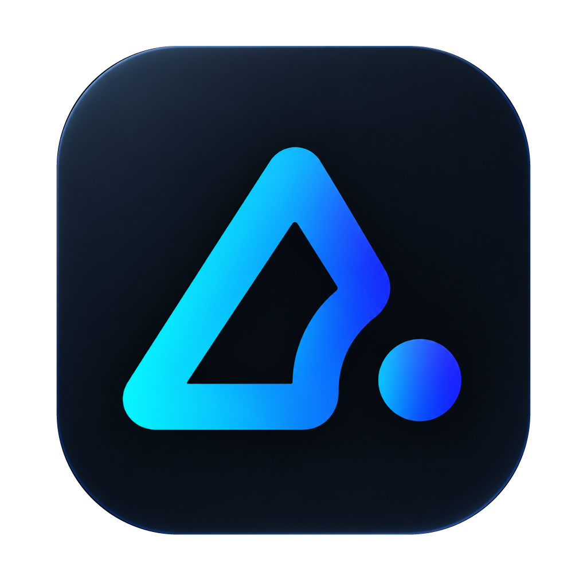

Connect Health Connect
Choose which supported health records AAYU can read. Your device and Health Connect permissions control what is available.

AAYUYOUR HEALTH, UNDERSTOOD
AAYU brings your sleep, recovery, strain and health trends together in one personal wellness app.
How AAYU worksA CLEARER VIEW OF YOUR ROUTINE
Choose which supported health records AAYU can read. Your device and Health Connect permissions control what is available.
AAYU organizes available readings into sleep, recovery, strain, stress and trend views to help you understand changes over time.
Journal check-ins, manual logs, preferences and saved health history can be included in an optional Google Drive backup.
WELLNESS, NOT DIAGNOSIS
AAYU is intended for general wellness and self-understanding. It is not a medical device and does not diagnose, treat, cure or prevent a disease. For medical questions, consult a qualified healthcare professional.
Contact: samiran.goldar@gmail.com